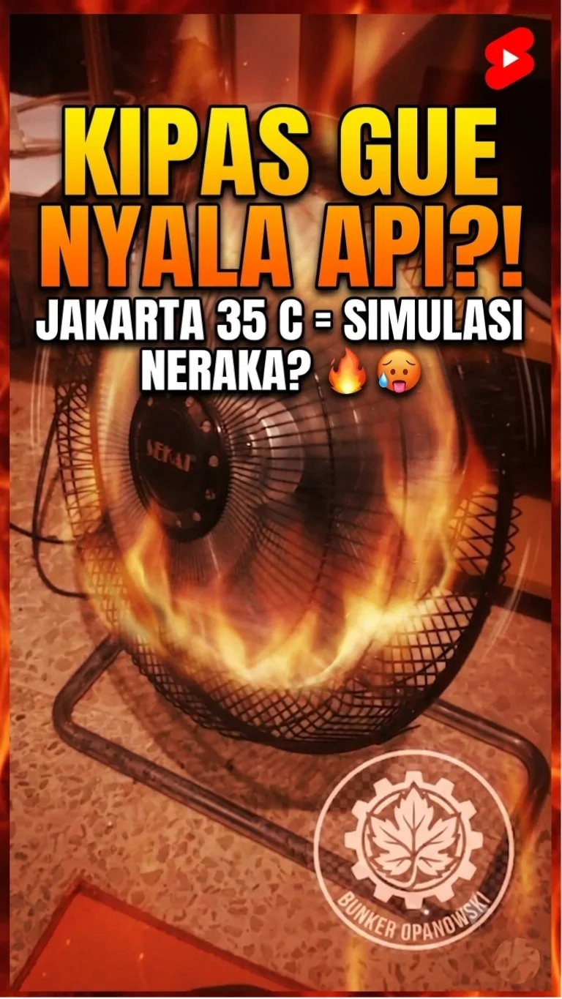
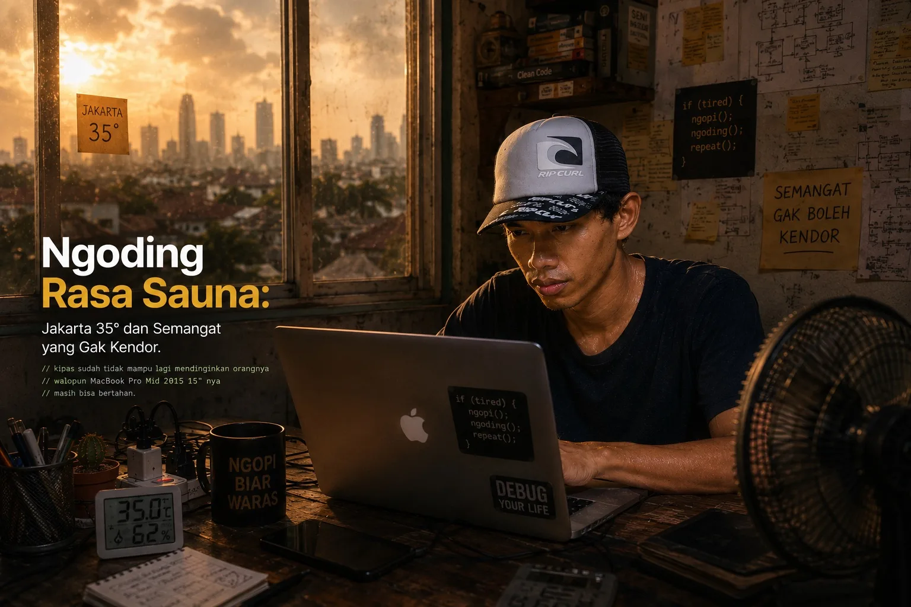

Halo bray, balik lagi di Bunker Opanowski! Hari ini gak ngomongin kebun, gak ngomongin motor, gak ngomongin kode yang error. Hari ini gw mau cerita soal musuh tak kasat mata yang lebih nyata dari segala bug: Jakarta yang lagi mode "simulasi neraka bocor".
Termometer di pojokan ruangan nunjukkin angka 35 derajat Celsius. Bukan di luar, bukan di jalan aspal yang bisa goreng telur — tapi di dalam Bunker. Di dalam ruangan kerja gw sendiri. Ini sih bukan panas biasa lagi.
1. Kondisi TKP: Laporan dari Dalam Bunker
Biar lo bisa ngebayangin situasinya, gw breakdown dulu kondisi Bunker Opanowski hari ini. Ini bukan lebay, ini laporan faktual:

"Kipas angin udah setting turbo, tapi yang dihembusin anginnya itu-itu juga — panas. Berasa ditiup kompor mawar. Ini bukan kipas pendingin, ini kipas pemindah masalah. 😤"

2. Musuh Utama: Bukan Bug, Tapi Suhu
Biasanya yang bikin gw susah fokus itu error di terminal, atau koneksi putus pas lagi ngupload. Tapi hari ini? Musuh nomor satu adalah suhu yang ngegebet konsentrasi dari luar.
Mac jadul kesayangan udah kayak partner yang ikut berkorban bareng. Kalo udah kerja keras dikit, suhunya langsung naik, fan langsung ngauuung. Itu dua sumber panas di meja sekaligus: Jakarta dari luar, Mac dari bawah telapak tangan.

3. Es Kopi Susu Gula Aren: Solusi Sementara yang Nyata
Kalau ada satu hal yang konsisten jadi penyelamat di hari-hari gerah, itu es kopi susu gula aren. Bukan karena ajaib — tapi karena efeknya nyata walau sementara.
Pas masuk tenggorokan, rasanya kayak AC mini yang langsung aktif dari dalam. Manis arennya dapet, pahit kopinya balance, dinginnya langsung terasa. Berasa hidup lagi sebentar.
Tapi jujur, efeknya nggak lama. Habis satu gelas, ya balik lagi ke realita: keringet ngucur, Mac ngebul, Jakarta tetap 35 derajat. Butuh gelas kedua? Hampir selalu iya.

"Gw ngerasain banget ironinya: lagi ngerjain konten soal produktivitas, tapi keringetan sendiri kayak baru abis HIIT. Mac udah ngebut fannya, kipas udah turbo — dan hasilnya tetep sauna. Ya udah, ketawa aja deh. 😂"
4. Bandung dalam Memori: Nostalgia yang Muncul Sendiri
Di hari-hari kayak gini, Bandung suka muncul tiba-tiba di kepala. Bukan karena gw pengen pindah — tapi karena kontrasnya gila. Di sana, hawa sore bisa bikin kerja tanpa kipas. Di sini? Malam pun masih terasa hangat.
Bandung: suhu rata-rata 20–25°C, angin sore natural, bisa fokus di kafe luar ruangan. Jakarta: 30–35°C harian, angin panas, AC adalah kebutuhan primer bukan mewah. Tapi yang satu ini yang gw pilih — dan Bunker Opanowski ada di sini, bukan di sana.
Toh, setiap kota punya trade-off-nya sendiri. Jakarta kasih akses, koneksi, dan energi yang beda. Gw pilih ini. Konsekuensinya ya... keringetan sambil ngoding. Deal-nya udah jelas dari awal.
5. Strategi Survive: Ngoding di Kota Paling Gerah
Setelah berkali-kali ngelewatin hari-hari kayak gini, gw udah nemu beberapa trik yang lumayan ngebantu:
Jangan maksa kerja intensif pas jam 12–3 siang di kondisi ini — itu peak heat hour Jakarta. Produktivitas drop, risiko heat fatigue naik. Lebih baik istirahat, makan, tidur siang singkat. Comeback jam 4 sore lebih efektif daripada maksa di jam panas.
📌 Penutup

"Panas 35 derajat, Mac ngebul, kipas jadi hairdryer raksasa — tapi konten tetap jalan. Itu definisi pejuang konten Ciracas. Gerah boleh, menyerah jangan. 💪"
Jakarta lagi menyala hari ini. Tapi Bunker Opanowski tetap beroperasi — walau operatornya peluh-peluhan dan kipas cuma mindahin panas dari satu sudut ke sudut lain.
Kalau lo juga lagi survive di kota yang sama, lo tau rasanya. Dan kalau lo di Bandung atau kota lain yang hawanya adem — nikmatin dulu, bray.
Gimana kondisi tempat lo? Sama-sama rasa sauna atau malah ujan adem? Drop di komentar — gw penasaran.
Tetap autodidak, tetap berkah! 🏴Lo juga lagi survive di tengah panas Jakarta? Atau di kota lain yang sama gerahnya? Cerita dong bray! 🔥